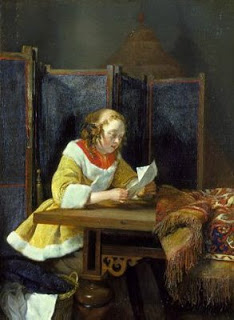

Kiddushin 5 - Betrothal with a Document
A document is drafted by a man, and it states that a woman is hereby betrothed to him. The Kiddushin is effected when the man gives the document to the woman.
Why does this work? Because "And she will leave the first husband's house, and she will go and be a wife unto another man." Since " leave " can be effected through a document, so too " be " can be effected through a document.
But if so, can divorce be effected with money? - No, because a defender cannot become an accuser. And while the documents would be different and distinct, money would be the same.